Resumen bilingüe de las charlas y talleres del evento Colombia 5.0 · Bilingual summary of Colombia 5.0 talks and workshops.
Conferencia 01 · Asignada por instructor
Conferencista: [Nombre del Conferencista]
La conferencia exploró el impacto de la inteligencia artificial generativa en el entorno empresarial colombiano. El conferencista presentó casos de uso reales donde modelos de lenguaje (LLM) como GPT-4 y Gemini están transformando procesos de atención al cliente, generación de contenido y automatización de reportes.
Se destacó la importancia de adoptar estas tecnologías de forma responsable, asegurando transparencia, privacidad de datos y supervisión humana. Las empresas que integren IA generativa sin una estrategia ética corren el riesgo de generar desinformación o sesgos algorítmicos que afecten a sus clientes.
Como conclusión, el ponente enfatizó que la IA generativa no reemplaza al talento humano, sino que lo potencia, y que Colombia tiene una gran oportunidad de liderar la adopción responsable en Latinoamérica.
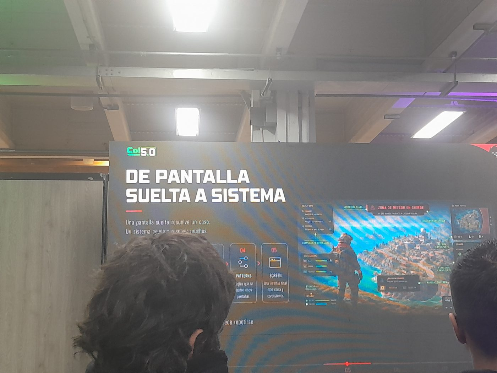
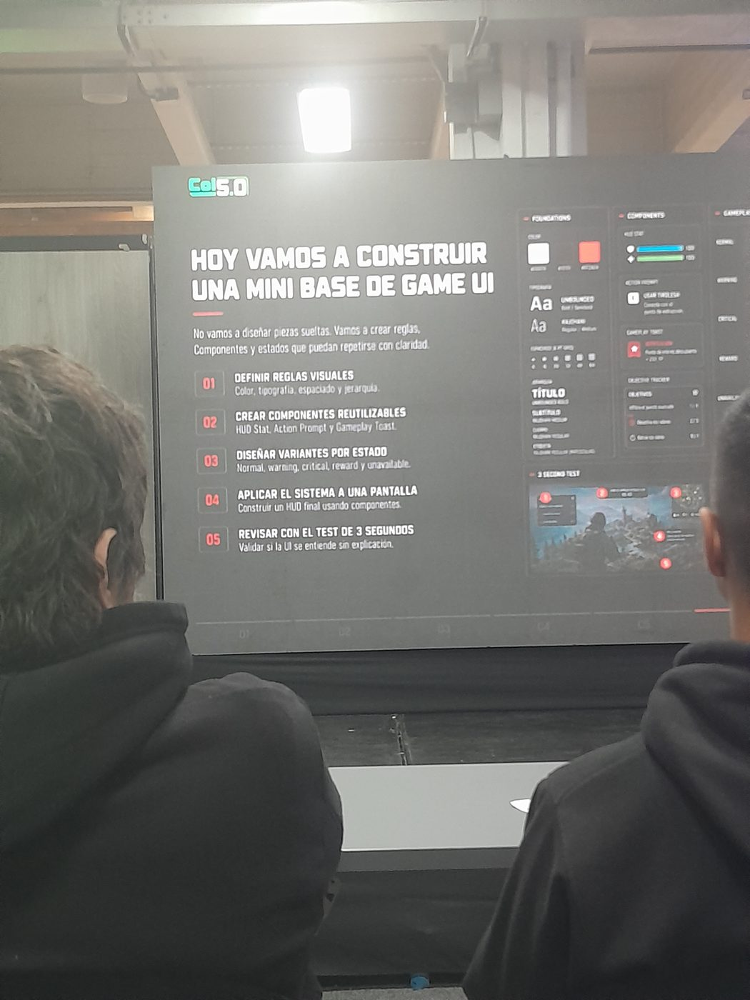
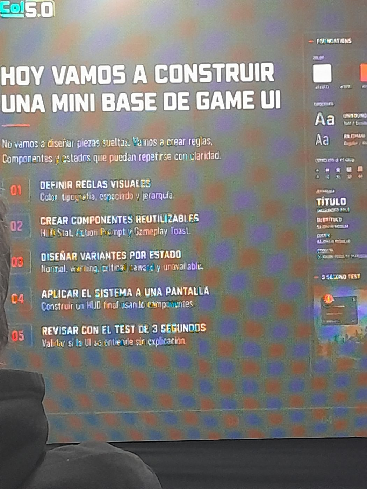
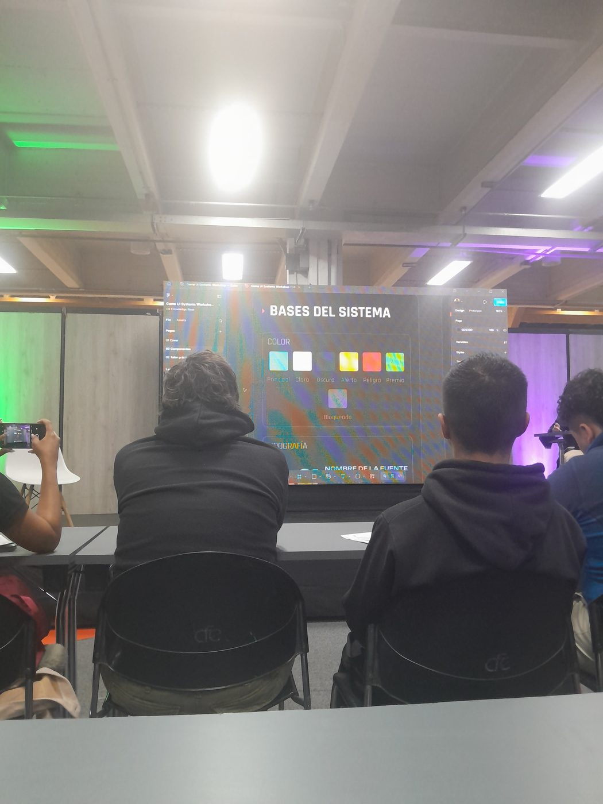
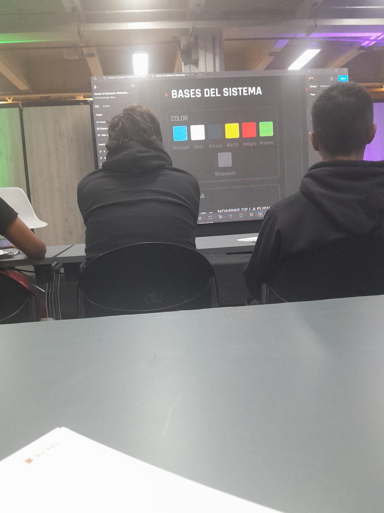
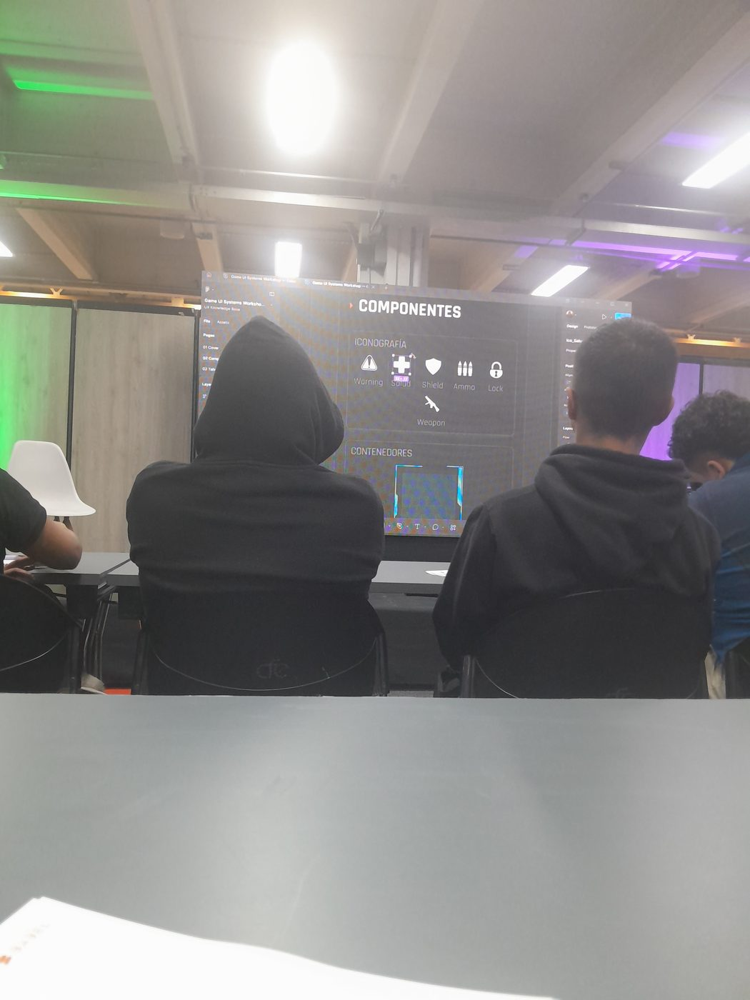
📷 Haz clic en cualquier foto para ampliarla
Conferencia 02 · Elección libre del estudiante
Conferencista: [Nombre del Conferencista]
Este taller abordó los principales vectores de ataque en el entorno empresarial actual, desde el phishing y ransomware hasta vulnerabilidades en APIs y servicios en la nube. El conferencista demostró en tiempo real cómo los atacantes identifican brechas de seguridad utilizando técnicas de reconocimiento pasivo y activo.
Se presentó el marco de trabajo NIST Cybersecurity Framework como herramienta para estructurar la estrategia de seguridad de una organización, y se analizaron casos reales de empresas colombianas afectadas por ciberataques en los últimos años.
El taller concluyó con recomendaciones prácticas para implementar una cultura de seguridad desde la raíz: contraseñas fuertes, autenticación multifactor, actualizaciones regulares y capacitación continua del personal.
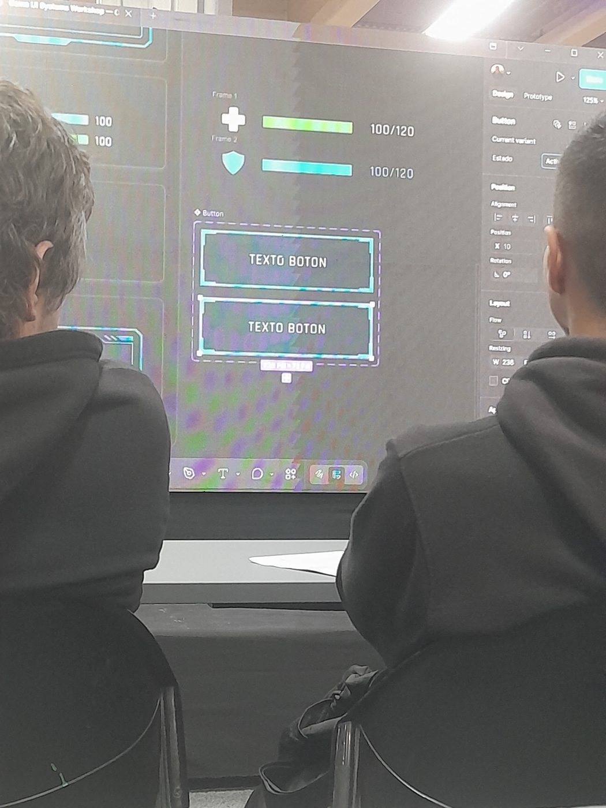
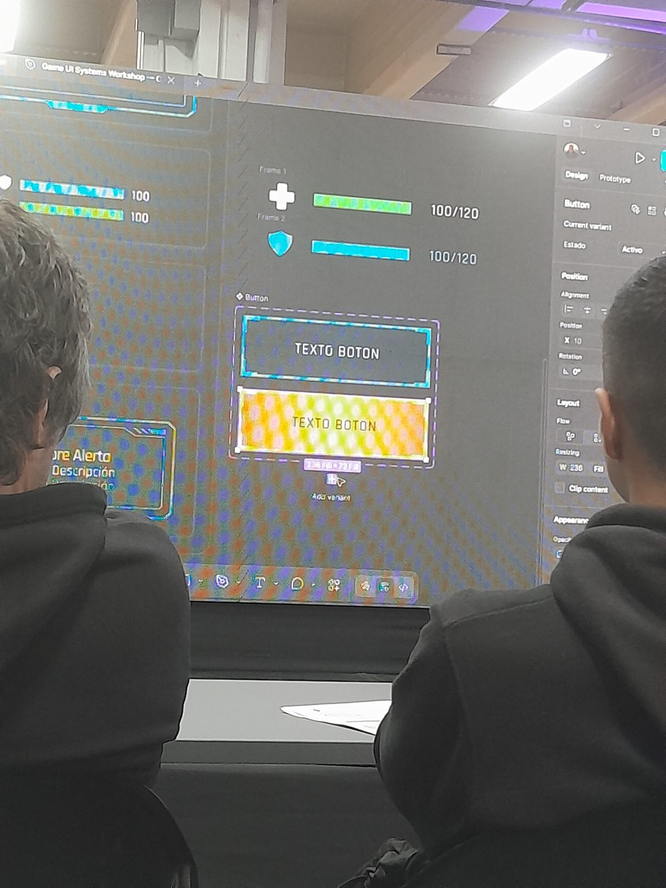
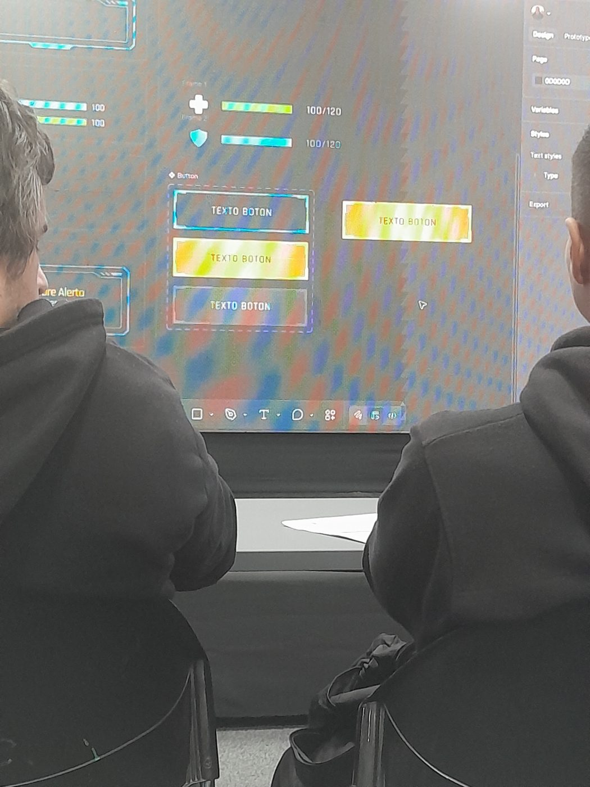
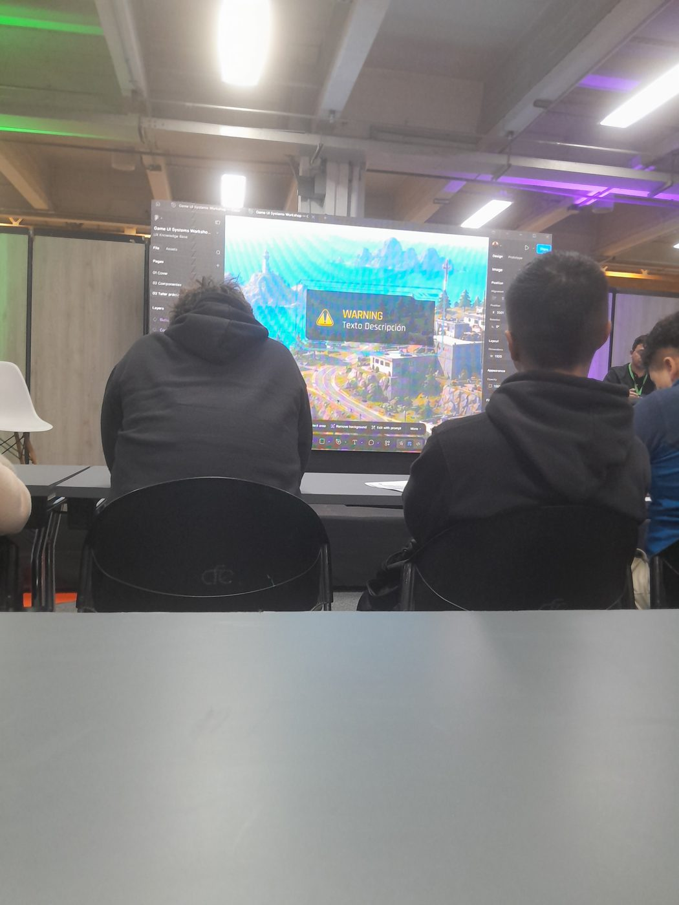
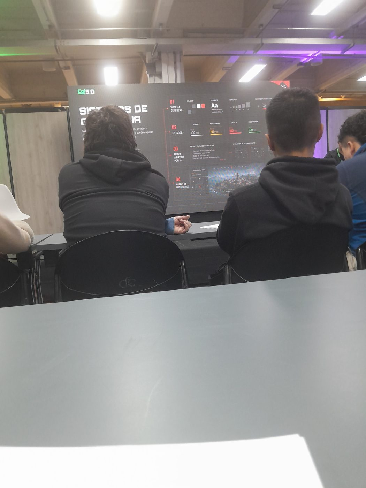
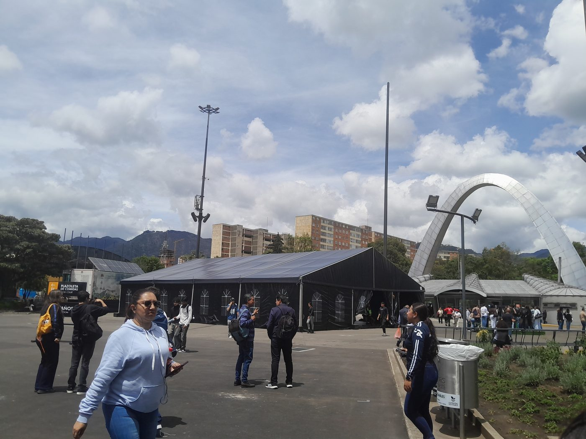
📷 Haz clic en cualquier foto para ampliarla